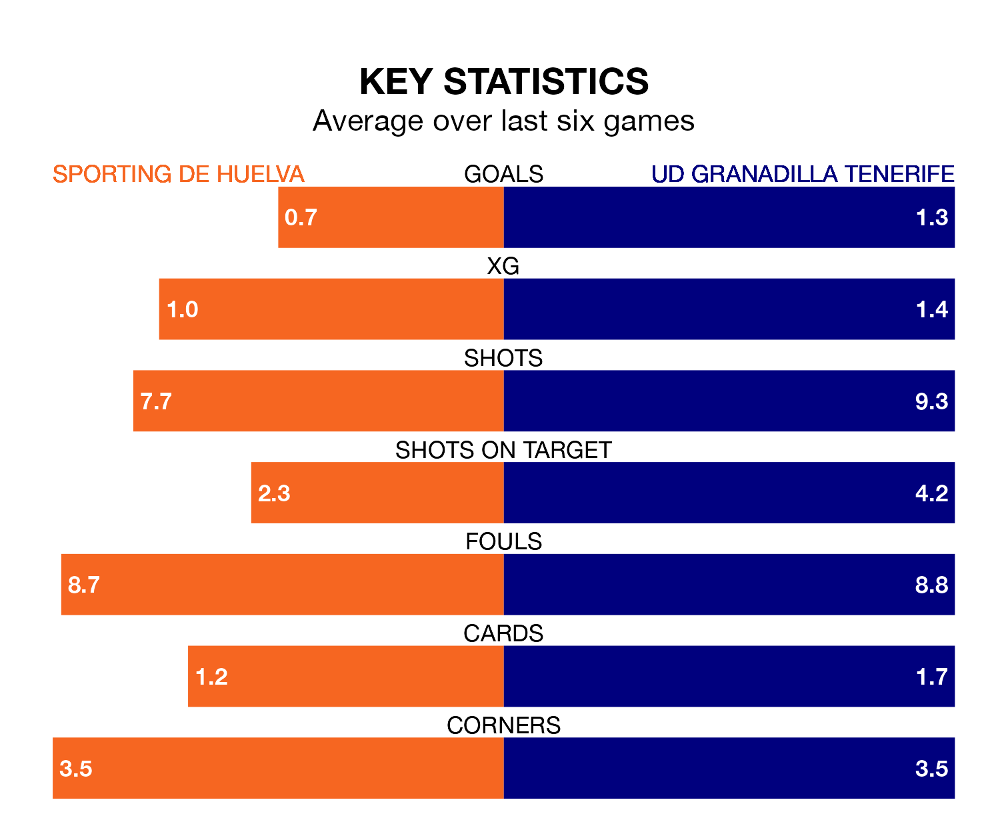

UD Granadilla Tenerife are strong favourites to take all three points despite Sporting de Huelva's home advantage in Sunday's early match at Campo Federativo de la Orden.
*Betting Company* are offering odds of 1.55 on Granadilla Tenerife sealing the win, with the visitors sitting ninth in Liga F table.
Sporting, who are 16th in the league and 19 points behind Granadilla Tenerife, are priced at 4.2 to win. A draw is set at 4.
Sporting are in terrible form in Liga F, with no wins and a draw from their last six games.
With a win and two draws over that period, Granadilla Tenerife's form is better – they have taken five points from 18, compared to the hosts' one.
In the last 10 years, Sporting and Granadilla Tenerife have played each other on 16 occasions. Sporting won two of them, Granadilla Tenerife eight, and they drew six times.
On average, Sporting scored 1.1 goals and Granadilla Tenerife 1.9 in those matches.
Their last meeting was on September 17, when Granadilla Tenerife won 2-0 at home.
With 13 goals in 21 games so far this season, Sporting are the league's lowest scorers with 0.6 goals per game. And they are conceding more than average, letting in 45 goals at a rate of 2.1 per game.
The away team are also below average scorers, with 1.3 goals per game, compared to a league average of 1.5. They have conceded 1.7 goals per game.
Granadilla Tenerife's Rinsola Babajide is among the league's most creative players, racking up seven assists in 21 appearances so far this season, and holding third spot in Liga F's assist charts.
For Sporting, Sandra Castelló Oliver and Patricia Ojeda have set up the most goals, having laid on two assists apiece to date.
Sporting's last match was on Sunday, a 2-1 loss against Madrid CFF, with Bárbara López Gorrado getting the goal for Sporting.
Granadilla Tenerife beat Sevilla Women 5-0 last time out, on March 23, with Maria Estella del Valle (two), Babajide, Jassina Blom and Thais Cristina da Silva Ferreira on the scoresheet.
Updated: 10:31 (UTC), 31/03/24